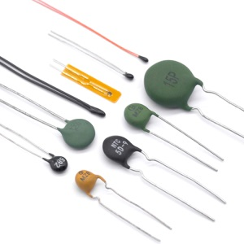
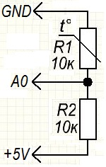
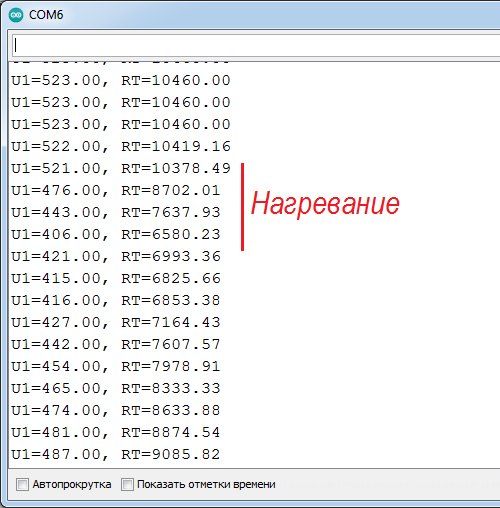
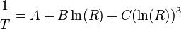
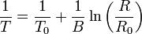

Подключение термистора к Arduino
Термистор (терморезистор, термосопротивление) – это резистор, сопротивление которого сильно зависит от температуры. Термисторы изготавливаются таким образом, чтобы сопротивление изменялось на значительную величину в зависимости от температуры - около 100 Ом и даже больше при изменении температуры на 1°C.

Термисторы бывают двух типов:
- с положительным температурным коэффициентом (PTC, positive temperature coefficient) — при повышении температуры сопротивление возрастает,
- отрицательным температурным коэффициентом (NTC - negative temperature coefficient) — при повышении температуры сопротивление уменьшается.
В большинстве случаев для измерения температуры используются NTC-термисторы. PTC-термисторы часто используются в качестве предохранителей - с увеличением температуры растет сопротивление, это приводит к тому, что через них проходит большая сила тока, они нагреваются и срабатывают как предохранители.
Основные преимущества термисторов:
- дешевле чем датчики температуры,
- проще использовать в условиях повышенной влажности,
- работают с любым напряжением (цифровые датчики требуют 3 В или 5 В питания логики),
- не нужен усилитель сигнала, чтобы считывать данные (можно использовать любой микроконтроллер).
- высокое соотношение точность показаний/цена. Например, термистор 10 кОм 1% может производить измерения температуры с точностью ±0,25°C.
- практически невозможно повредить.
Недостаток: диапазон температур, который можно измерить с помощью термисторов не такой широкий как у термопар и их настройка для снятия показаний тоже немного сложнее.
Подключение термистора к Arduino
Схема подключения представляет собой простейший резистивный делитель на двух резисторах одинакового номинала. R1 - это NTC термистор номиналом 10 кОм подключенный к GND, R2 - обычный резистор с номиналом 10 кОм подключенный к +5V. Со средней точки включения R1 и R2 снимаются показания на аналоговый вход A0 Arduino. Так как сопротивление термистора достаточно высокое (около 10 кОм), сопротивление проводников практически не повлияет на результаты измерений.

Методика считывания аналогового напряжения
Для определения температуры, необходимо измерить сопротивление. Так как в Arduino нет встроенного измерителя сопротивления, но есть возможность считывать напряжение с помощью аналогово-цифрового конвертера. Для этого в схеме есть резистор R2=10кОм.
Напряжение U0 на выводе A0, которое мы будем передавать Arduino, будет равно:
U0 = Rt /(Rt + R2) · Ucc,
где Ucc - напряжение источника питания (3,3 В или 5 В),
Rt — сопротивление термистора.
При измерении напряжения (Ui) с использованием АЦП на Arduino, мы получим числовое значение
Du= Ui·1023 / Ucc
Отсюда получаем :
Du = Rt /(Rt + R2) · Ucc· 1023 / Ucc
Сократив Ucc получаем:
Du = Rt /(Rt + R2) · 1023.
Данная формула показывае, что полученное значение не зависит от напряжения питания.
Выполнив еще одно преобразование получим выражение для Rt :
Rt = R2 / (1023/Du - 1)
Скетч №1
int R2=10000; // значение резистора R2 int Tpin=A0; // вывод к которму подключаен термистор float Du; //считываемое напряжение float RT; //сопротивление термистора void setup() { Serial.begin(9600); } void loop() { Du = analogRead(Tpin); Serial.print("U1="); Serial.println(Du); RT = R2/(1023/Du - 1); //преобразуем Du в сопротивление Serial.print("RT="); Serial.println(RT); delay(2000); }
Загружаем в Arduino скетч. Открыв монитор порта увидим считываемое значение и сопротивление термистора

Преобразовывание сопротивления термистора в температуру
Для получения фактического значения температуры можно использовать уравнение Стейнхарта-Харта:

Уравнение достаточно сложное и требует большого количества переменных-параметров, которых может не быть для конкретного термистора. Вместо этого уравнения можно использовать упрощенное уравнение.

Для этой зависимости нам надо знать T0 (для комнатной температуры (25°C) T0= 298,15K), B (коэффициент, который зависит от используемого термистора, в данном случае B=3950), и R0 (сопротивление при комнатной температуре (R0=10 кОм)). Подставляем R=RT (измеренное сопротивление) и получаем значение T (температура по Кельвину), которую преобразовываем в °C.
Скетч №2
int R2=10000; // значение резистора R2 int Tpin=A0; // вывод к которму подключаен термистор float Du; //считываемое напряжение float RT; //сопротивление термистора float logR2, T; //c1, c2, c3 - коэффициенты Штейнхарта-Харта для термистора float c1 = 0.001129148, c2 = 0.000234125, c3 = 0.0000000876741; void setup() { Serial.begin(9600); } void loop() { Du = analogRead(Tpin); Serial.print("U1="); Serial.print(Du); RT = R2/(1023/Du - 1); //преобразуем Du в сопротивление Serial.print("RT="); Serial.print(RT); logR2 = log(RT); T = (1.0 / (c1 + c2*logR2 + c3*logR2*logR2*logR2)); //температура в Кельвине T = T - 273.15; //преобразование Кельвина в Цельсия Serial.print(", T="); Serial.print(T); Serial.println("C"); delay(2000); }
При измерении температуры имеются погрешности самого термистора и аналоговой электрической цепи.
Можно аппроксимировать ожидаемую погрешность, если учесть ошибку сопротивления самого термистора. Например, на термисторе указано 1%. Это значит, что при 25°C он может выдать показания в диапазоне от 10,100 до 9900 Ом. При 25°C разница в показаниях в 450 Ом соответствует 1°C, так что погрешность 1% составляет около ±0,25°C (можно провести калибровку термистора при 0°C и исключить отклонения). Также можно использовать термистор с погрешностью 0,1%. Это поможет уменьшить ошибку в показаниях до ±0,03°C
Есть вторая погрешность, которая возникает при аналогово-цифровом преобразовании. Каждый некорректно прочитанный бит может давать отклонения около 50 Ом. В принципе эта погрешность меньше, чем ошибка самого термистора ±(0,1°C), но, используя Arduino Uno или Arduino Pro Mini, уменьшить эту погрешность невозможно. Если вас такая точность не устраивает, необходимо использовать более "продвинутые" модели Arduino, которые обеспечат 12-16 бит вместо 10 при аналогово-цифровом преобразовании.
В общем, термисторы обеспечивают большую точность при измерении температуры по сравнению с термопарами и большинством недорогих цифровых датчиков температуры, но, используя Arduino и термистор, вы не получите измерения с точностью более чем ±0.1°C. Используя 1% термистор, показания не будут точнее ±0.5°C.
Источники
radioprog.ru - Измерение температуры с помощью термистора NTC
arduino-diy.com - Термистор и Arduino
digitrode.ru - Arduino и термистор: принцип работы, схема подключения, код